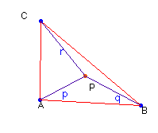
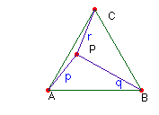

Solución Saturnino Campo
Ruiz, profesor de Matemáticas del I.E.S. Fray Luis de León (Salamanca) (17 de febrero
de 2003)
Problema nº
77. Una caracterización del triángulo equilátero.
a) Por cada punto P interior de un triángulo dado ABC, puede construirse un triángulo con los segmentos PA, PB y PC. Demostrar que ABC es equilátero.
b) Ampliación del
editor: Demostrar que en un triángulo equilátero ABC, si P es un punto
interior cualquiera, los segmentos PA, PB y PC pueden construir un triángulo.
Propuesta de definición: Un triángulo es
equilátero si tomado un punto interior P cualquiera, se puede construir con PA,
PB y PC un triángulo.
Solución.-

a) Si es posible construir el triángulo con los segmentos p, q y r, entonces es p > q — r. Si el punto interior P se desplaza hacia el vértice A, llegando a ser igual a él, entonces los segmentos q y r se convierten en los lados AB y AC, que para poder seguir verificando que su diferencia sea menor que p, han de ser iguales. Repitiendo el razonamiento con otro par de lados, se demuestra que ABC es equilátero. (Si tomamos P
en el interior de un círculo centrado en A de radio e,
será p
< e y p
+ q > AB , luego AB – q < e;
de p
+ r > AC sigue que AC – r < e; q – r < p implica q – r< e )
b) Sean p, q y r los
segmentos determinados con P y los vértices del triángulo; para el
triángulo CPB el ángulo en P es el mayor de los tres, pues los
otros dos no llegan a los 60º cada uno, por tanto CB es mayor que
r y que q (también es menor que r + q). Es decir,
el lado del triángulo equilátero es mayor que cualquiera de los segmentos p,
q y r.

Se tiene que p < CB < r + q. Por tanto puede construirse el triángulo con p, q y r.